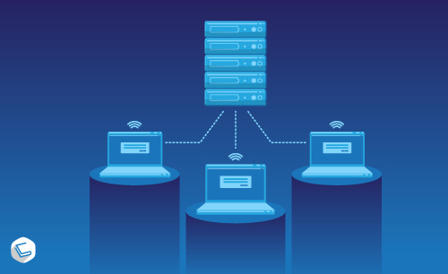

To become a server-side developer, you need a solid foundation in backend programming, database management, API design, security, and deployment.
This role focuses on building the logic, data handling, and infrastructure that power web applications behind the scenes.
You’ll start by mastering backend languages such as JavaScript (Node.js), Python, Java, C#, or PHP.
These languages let you build server logic, handle requests, and interact with databases.
Speaking of databases, you’ll need to understand both relational databases like MySQL and PostgreSQL, and NoSQL databases like MongoDB and Redis.
Writing efficient queries and managing data structures is key.
Next, you’ll dive into API development, especially RESTful and GraphQL services.
You’ll learn how to structure endpoints, manage authentication (like OAuth or JWT), and ensure secure data exchange.
Understanding server architecture—including client-server models, load balancing, caching, and microservices—is essential for building scalable systems.
Surviving University
Lenworth Hassel - September 26, 2025
You wake up tired. Not because you partied last night, but because you stayed up finishing an assignment due at midnight and started another due tomorrow.
You check your schedule—two lectures, a lab, and a group meeting. You haven’t eaten yet.
You learn to walk fast, think faster, and speak in acronyms: GPA, TA, PDF, LMS.
You memorize deadlines like birthdays. You become a master of the 10-minute nap and the 3-minute shower.
You learn that coffee is a meal and that instant noodles are a lifestyle.
You sit in lectures trying to absorb information while your brain replays the last conversation you had with your advisor, wondering if you’re on the right track.
You nod, take notes, and Google half the terms later.
You learn that understanding doesn’t always happen in the moment—it happens at 2 AM when you're rewriting your notes and something finally clicks.
You make friends. Some last a semester, some a lifetime.
You learn to navigate group projects, where one person disappears, another overworks, and you end up doing more than your share.
You learn to say no. You learn to ask for help.
You fail sometimes. A test, a class, a relationship.
You cry. You recover.
You learn that failure isn’t the end—it’s a pivot.
You learn to forgive yourself.
You celebrate small wins: submitting on time, passing a tough course, getting a decent grade, making it through the week.
You learn that survival is built on these moments.
And one day, you look back and realize: you didn’t just survive university.
You became someone stronger, wiser, and more capable than you were when you started.